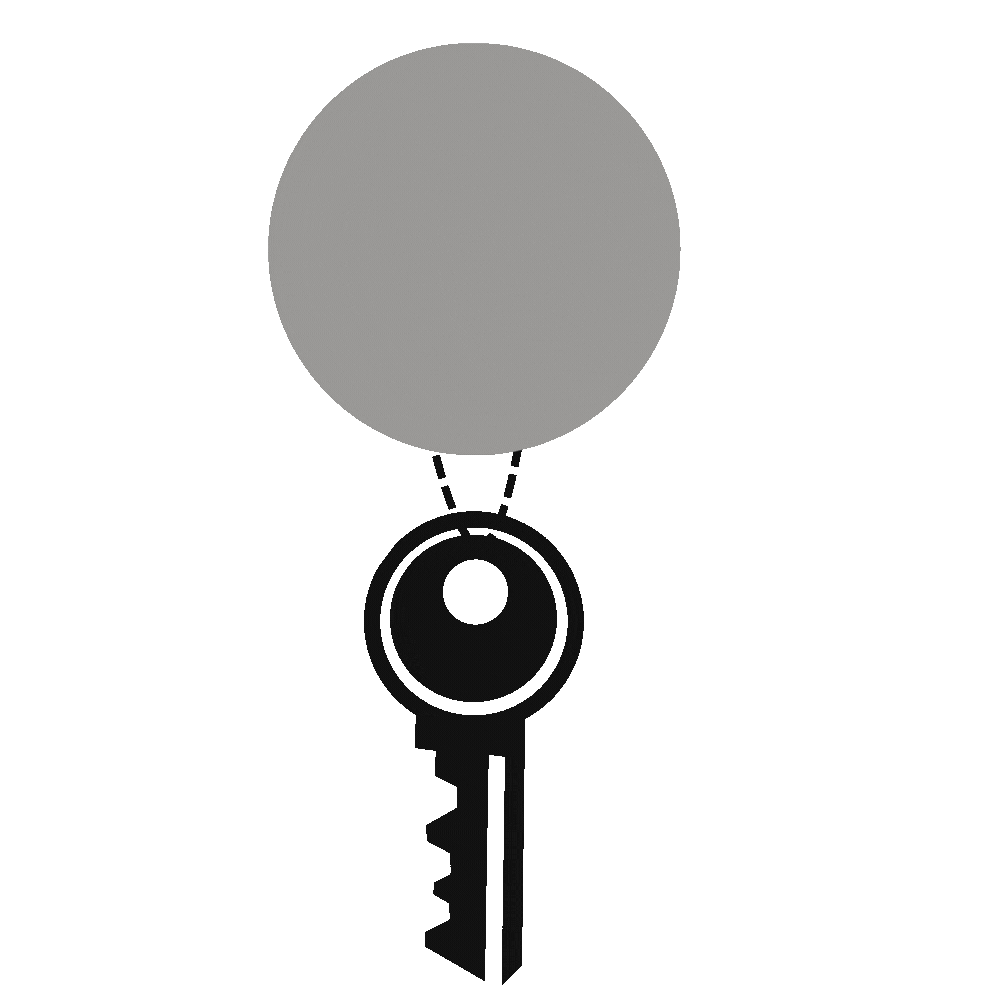

Instant recall
Open the popover, type two letters, hit return. Your key is on the clipboard before the window finishes fading in.

Keyholdr GitHubOpen source · Native macOS & Windows
A native vault that lives quietly in your menu bar. Hardware-backed storage, biometric unlock, and your API keys on the clipboard in a blink.
Try it — click a key to copy
No dock icon, no window, no clutter. Keyholdr sits beside your clock and opens with a click — or ⌃⌥⌘K from anywhere. Search, copy, gone.
Open the popover, type two letters, hit return. Your key is on the clipboard before the window finishes fading in.
Platform names resolve to icons and themes automatically — OpenAI, GitHub, Stripe, AWS — no manual organizing.
Click away and the popover vanishes and locks. Nothing lingers on screen, nothing stays decrypted.
Pure SwiftUI. Under 1 MB, negligible memory, zero Chromium.
Starts at login and survives reboots — toggle it off in one click if you'd rather it didn't.
Export the whole vault to one passphrase-encrypted file and import it on your next machine. No cloud required.
Metadata and secrets never travel together. Names and labels live in a local file — the secrets themselves go straight into the operating system's hardware-backed vault and never touch the disk in cleartext.
Secrets are written straight to your OS's hardware-backed credential store — macOS Keychain Services or Windows Credential Manager — encrypted by the OS.
Touch ID, Apple Watch, or Windows Hello is required before any secret is decrypted. Physical presence, every time.
No servers, no sync, no analytics, no network calls. Your keys never leave the machine.
The key list mirrors itself into the OS vault. Delete the app, its files, or both — reinstall and everything is still there.
Every line, on both platforms, is source-available for non-commercial use. Read it, build it yourself, trust nothing on faith.
The Windows app covers the core vault — tray popover, Credential Manager storage, and Windows Hello unlock. The export/backup format and CLI companion are macOS-only for now and are next up for Windows.
Free · source-available · no account, ever